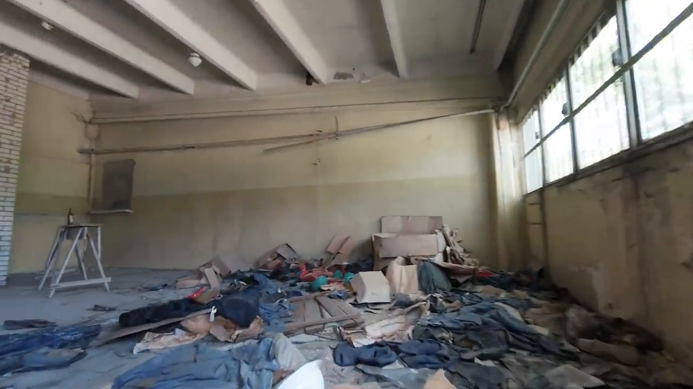
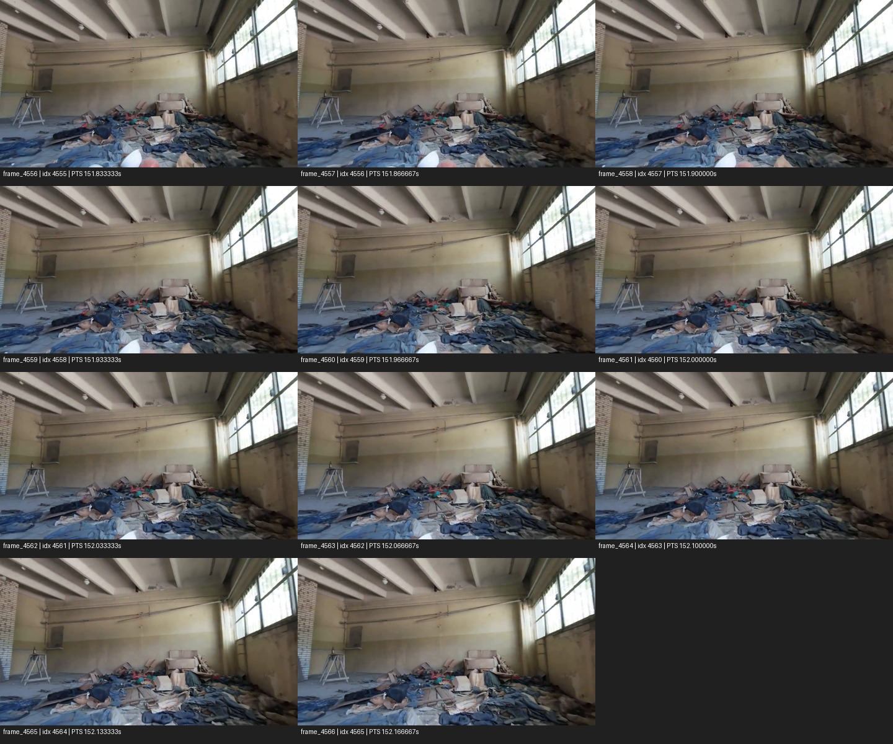

Candidate seed: debris/window interior
This is a source-frame review bundle for the second-room candidate. It does not authorize Hunyuan inference.
Recommended seed: frame_4560 — zero-based index 4559, PTS 151.966667 s, native 1280×720, SHA-256 7a2b3dd1b43478fa491447731c06b0f36fce71e2b80cbb089d3744cb02abcd0f.Full-resolution direct source frame

Adjacent-frame review

Seed review report · Frame/hash manifest